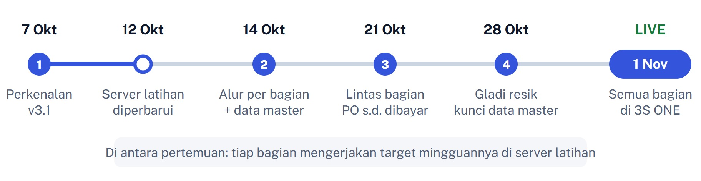

Jadwal dan target mingguan menuju live 1 November
Bagian Admin, Inventory, Menu, dan Accounting
Disiapkan untuk Owner W3S Catering
Tujuan: mulai 1 November 2026, bagian Admin, Inventory, Menu, dan Accounting bekerja di 3S ONE; sistem lama (v2 dan Master Menu Revamp) dibekukan pada 31 Oktober.
Cara: empat pertemuan setiap Rabu. Di antara pertemuan, setiap bagian mengerjakan target mingguannya di server latihan, lalu hasilnya diperiksa di pertemuan berikutnya.
| Pertemuan | Fokus | Hasil |
|---|---|---|
| 1 · Rabu 7 Okt selesai | Presentasi fitur dan pengenalan sistem baru (3S ONE v3.1). | Semua bagian mengenal 3S ONE. Masukan dari pertemuan ini sudah dikerjakan (lihat di bawah). |
| 2 · Rabu 14 Okt | Alur per bagian: praktik di aplikasi masing-masing. | Setiap orang sudah menjalankan pekerjaannya sendiri satu kali dan memegang target minggu ini. |
| 3 · Rabu 21 Okt | Alur lintas bagian: satu pesanan dari PO sampai tagihan dibayar, plus skenario masalah. | Pekerjaan berpindah antar bagian tanpa ditanya "giliran siapa". |
| 4 · Rabu 28 Okt | Gladi resik satu hari kerja penuh, lalu keputusan siap live. | Keputusan Owner: live 1 November, atau bagian mana yang ditunda. |
| Masukan | Yang sekarang ada di sistem |
|---|---|
| Belum ada modul pembelian bahan baku | Tagihan Pembelian: inventory belanja dan mengetik isi nota, lalu mengajukan tagihan berfoto nota; accounting mencocokkan dan membayar, atau mencatatnya sebagai hutang supplier. |
| Resep, menu utama, sub menu, HPP, OHC dipegang tim tersendiri | Aplikasi Menu dengan peran baru Menu. Bagian lain hanya membaca resep. |
| Admin mengurus harga jual dan profit ke customer | HPP & OHC di Master Menu otomatis mengikuti resep yang lengkap; admin fokus ke harga jual dan profit. |
| Menu dan sub menu bisa dirinci di SPK Produksi | Breakdown Bahan bertingkat: menu utama ▸ sub menu ▸ bahan, dibuka dengan tanda ▸. |
Inventory dipegang satu orang (peran Supervisor Gudang); staf gudang yang mengontrol barang fisik tidak memerlukan akun.
| Bagian | Target |
|---|---|
| Menu | Semua aturan konversi satuan dan nama bahan beres (antrean = 0); 60 menu terlaris tertaut ke resep yang lengkap, sehingga profit menu keseluruhan bisa dihitung. |
| Inventory | 50 bahan utama dan data supplier rapi; sudah menyetujui, memeriksa, dan mengajukan tagihan sendiri; minimal 4 hari mencatat belanja nyata secara paralel; lembar hitung fisik 31 Oktober siap. |
| Admin | Setiap admin sudah memasukkan PO → SPK sendiri; minimal 4 hari mencatat pesanan nyata secara paralel; HPP 30 menu terlaris di Master Menu sudah diperiksa bersama tim Menu. |
| Accounting | Setiap staf sudah Bayar, Jadikan hutang supplier, dan Kembalikan tagihan; tagihan diproses paling lambat 1 hari kerja. |
Rincian target per minggu dan tanda selesainya ada di Bab 2.
| Kapan | Apa |
|---|---|
| Sebelum 14 Okt | Di Owner › Master User: beri peran Menu ke tim resep dan peran Supervisor Gudang ke pemegang sistem inventory. |
| 28 Okt | Hadir pada gladi resik, atau menunjuk wakil, dan memutuskan siap live per bagian (Bab 4). |
| Sepanjang Oktober | Memeriksa Pengaturan Inventory (% OHC, % profit, batas profit menu); memantau lembar progres tiap Rabu. |
Pelatihan terdiri dari empat pertemuan, satu kali seminggu setiap Rabu; pertemuan pertama (7 Oktober) sudah berlangsung. Di antara pertemuan, setiap bagian mengerjakan target mingguannya di server latihan. Tujuannya: pada 1 November 2026 semua bagian sudah bekerja di 3S ONE.

| Kapan | Apa yang terjadi | Hasil yang diharapkan |
|---|---|---|
| Rabu 7 Okt (selesai) | Pertemuan 1: presentasi fitur dan pengenalan sistem baru. 3S ONE v3.1, Modul Inventory, dan perpindahan dari Master Menu Revamp. | Semua bagian mengenal 3S ONE; masukan revisi dicatat dan sudah dikerjakan. |
| Senin 12 Okt | Server latihan diperbarui ke versi terbaru: aplikasi Menu, Tagihan Pembelian, HPP ikut resep, breakdown bertingkat, tampilan baru. Owner memberi peran Menu ke tim resep. | Semua orang bisa masuk ke server latihan dan melihat tab sesuai perannya. |
| Rabu 14 Okt | Pertemuan 2: alur per bagian. Apa yang berubah sejak 7 Okt, demo per aplikasi, praktik per bagian. | Setiap orang sudah menjalankan pekerjaannya sendiri satu kali, dan memegang daftar target minggu ini. |
| Rabu 21 Okt | Pertemuan 3: alur lintas bagian. Satu pesanan dari PO sampai tagihannya dibayar, dikerjakan orang aslinya, plus skenario masalah. | Alur berpindah antar bagian tanpa ditanya "sekarang giliran siapa". |
| Rabu 28 Okt | Pertemuan 4: gladi resik. Satu hari kerja penuh di server latihan tanpa bantuan, lalu keputusan siap live per bagian. | Keputusan Owner: live 1 November, atau bagian mana yang perlu ditunda. |
| Sabtu 31 Okt | Hitung fisik semua bahan di gudang. Sistem lama (v2 dan Master Menu Revamp) dibekukan malamnya. | Lembar hitung fisik lengkap untuk Saldo Awal Stok. |
| Minggu 1 Nov | Live. Semua pekerjaan di 3S ONE. | Daftar "hari pertama" di Bab 5 selesai. |
Setiap target punya tanda selesai yang bisa dicek di pertemuan berikutnya: angka di layar, atau pekerjaan yang sudah dilakukan sendiri. Kolom kiri adalah minggu pengerjaannya; targetnya dicek di pertemuan pada akhir minggu itu.
Bacaan: Bab 9 (Aplikasi Menu). Catat angka di Dashboard Menu pada 14 Oktober sebagai titik awal.
| Minggu | Target | Tanda selesai |
|---|---|---|
| 14 → 21 Oktdicek 21 Okt |
| Konversi Belum Diatur = 0 Bahan Belum Cocok ≤ ½ angka awal 30 menu terlaris tertaut |
| 21 → 28 Oktdicek 28 Okt |
| Bahan Belum Cocok = 0 60 menu terlaris: tertaut & Lengkap Kartu Profit menu keseluruhan menampilkan angka Di Admin › Master Menu muncul label HPP dari resep |
| 28 Okt → 1 Novdicek 1 Nov |
| Tidak ada menu terlaris yang muncul di kotak kuning Breakdown Bahan |
Bacaan: Bab 8, 10, 11, 12. Inventory dipegang satu orang dengan peran Supervisor Gudang (Setujui, Periksa, Tagihan). Staf gudang yang mengontrol barang fisik tidak memakai sistem: inventory memastikan catatan di sistem sama dengan barang yang dihitung staf gudang. Yang belanja dan mengetik isi nota adalah inventory; accounting tinggal mencocokkan dan membayar.
| Minggu | Target | Tanda selesai |
|---|---|---|
| 14 → 21 Oktdicek 21 Okt |
| 50 bahan utama rapi Supplier aktif lengkap ≥ 3 tagihan diajukan sendiri Pernah Setujui & Tolak Lembar terima barang dari staf gudang dipakai |
| 21 → 28 Oktdicek 28 Okt |
| ≥ 4 hari paralel tercatat Tidak ada tagihan > 1 hari di tab Belum diajukan Lembar hitung fisik siap |
| 28 Okt → 1 Novdicek 1 Nov |
| Kartu Stok bahan utama menampilkan saldo awal 1 Nov |
Bacaan: Bab 6 (Admin), Bab 9 bagian "Kapan HPP di Master Menu ikut resep". Ingat: customer dan menu jual diambil dari v2, jadi perbaikan datanya dilakukan di v2.
| Minggu | Target | Tanda selesai |
|---|---|---|
| 14 → 21 Oktdicek 21 Okt |
| 30 menu terlaris diperiksa ≥ 3 SPK latihan tersedia SPK Produksi & Breakdown Bahannya terbentuk |
| 21 → 28 Oktdicek 28 Okt |
| ≥ 4 hari paralel tercatat Setiap admin pernah input PO → SPK sendiri |
| 28 Okt → 1 Novdicek 1 Nov |
| PO pertama 1 Nov dibuat di 3S ONE |
Bacaan: Bab 7 dan 12. Akun kas dan kategori diambil dari v2, jadi perbaikan datanya dilakukan di v2.
| Minggu | Target | Tanda selesai |
|---|---|---|
| 14 → 21 Oktdicek 21 Okt |
| Tiap staf pernah Bayar, Jadikan hutang, Kembalikan |
| 21 → 28 Oktdicek 28 Okt |
| Tab Menunggu dibayar tidak berisi tagihan > 1 hari kerja |
| 28 Okt → 1 Novdicek 1 Nov |
| Tagihan pertama 1 Nov dibayar dari Tagihan Pembelian |
Alur Form Kebutuhan dan Tagihan Pembelian hanya bisa dilatih bila dapur dan Owner ikut bergerak.
| Bagian | Yang perlu dikerjakan selama Oktober |
|---|---|
| Dapur (Production) | Setiap ada SPK latihan: susun Form Kebutuhan, isi Stok Awal, Ajukan; setelah barang diperiksa, isi Sisa Stok dan Tutup SPK. Bantu tim Menu memeriksa takaran 20 menu teratas (minggu 21 → 28 Okt). |
| Owner | Sebelum 14 Okt: beri peran Menu ke tim resep dan peran Supervisor Gudang ke pemegang sistem inventory di Master User (staf gudang fisik tidak perlu akun). 28 Okt: keputusan siap live per bagian (Bab 4). Periksa Pengaturan Inventory. |
Pertemuan 2 sampai 4 masing-masing kira-kira 90 menit, memakai proyektor ke server latihan; peserta membawa HP atau laptop yang sudah bisa masuk.
| Materi | Isi |
|---|---|
| Apa itu 3S ONE | Satu login untuk semua bagian; setiap orang hanya melihat aplikasi dan tombol sesuai perannya. Pesanan diketik sekali dan mengalir ke dapur, gudang, dan keuangan. |
| Alur satu pesanan | PO dan SPK Admin → SPK Produksi terbentuk sendiri → Form Kebutuhan (ajukan, setujui) → barang datang dan Periksa → Kartu Stok, HPP, dan laporan. |
| Modul Inventory | Item Inventaris dan riwayat harga, Breakdown Bahan, Lembar Kerja dan Plating, Kartu Stok, Opname Bahan, Susut Bahan, Barang Sisa. |
| Dari Master Menu Revamp | Peta pindah menu lama ke menu baru; pekerjaan resep dan bahan tidak hilang; tiga antrean supaya HPP bisa dipercaya. |
| Rencana Oktober | Oktober latihan dan pemetaan data; 1 November resmi. |
| Masukan peserta | Masukan di halaman Ringkasan; semuanya sudah dikerjakan dan dipasang di server latihan pada 12 Oktober. |
| Menit | Isi |
|---|---|
| 15 | Cek akses: semua orang masuk ke server latihan, ganti password, tab yang tampil sesuai perannya. Yang belum benar dicatat untuk Owner. |
| 10 | Yang berubah sejak 7 Oktober (tabel Pembaruan Oktober 2026 di Panduan Bab 4): Tagihan Pembelian, aplikasi Menu, HPP ikut resep, breakdown bertingkat. |
| 20 | Demo diagram Satu pesanan, empat aplikasi dengan satu SPK latihan: Menu → Admin → Inventory → Accounting. |
| 35 | Praktik per bagian, masing-masing satu kali dari awal sampai akhir. Menu: satu baris konversi, satu bahan belum cocok, satu pencocokan menu. Inventory: satu Form Kebutuhan sampai Periksa, lampirkan nota, Ajukan. Accounting: proses tagihan itu. Admin: satu PO → SPK, lalu cek SPK Produksi-nya. |
| 10 | Bagikan target minggu ini (Bab 2) dan isi kolom 14 Okt di lembar progres (Bab 4). |
| Menit | Isi |
|---|---|
| 15 | Isi kolom 21 Okt di lembar progres. Target yang belum tercapai: apa penghambatnya, siapa membantu. |
| 45 | Satu pesanan dari PO sampai tagihannya dibayar, dikerjakan orang aslinya di perangkat masing-masing. Sisipkan skenario masalah: form ditolak inventory; barang datang rusak (retur dan tetap dibayar); tagihan dikembalikan karena nota tidak terbaca; supplier memberi tempo; menu tanpa resep muncul di kotak kuning Breakdown Bahan. |
| 20 | Tanya jawab dan kendala di lapangan. Kendala yang butuh perubahan sistem dicatat untuk tim IT. |
| 10 | Target minggu depan, termasuk paralel harian dan hapus data [LATIHAN] sebelum 27 Okt. |
| Menit | Isi |
|---|---|
| 50 | Satu hari kerja penuh di server latihan tanpa bantuan pelatih: pesanan Admin, Form Kebutuhan, persetujuan, barang datang, tagihan, pembayaran, Tutup SPK. Pelatih hanya mencatat di mana orang berhenti atau bertanya. |
| 20 | Isi kolom 28 Okt di lembar progres, lalu cek siap live per bagian (Bab 4). Owner memutuskan. |
| 20 | Briefing hari pertama (Bab 5): siapa mengerjakan apa pada 31 Okt dan 1 Nov, ke siapa melapor bila ada masalah, dan sebutkan versi sistem saat melapor. |
Isi di setiap pertemuan. Angka diambil dari layar (badge menu kiri dan dashboard), bukan dari ingatan.
| Angka | 14 Okt | 21 Okt | 28 Okt | Target 1 Nov |
|---|---|---|---|---|
| Menu › Konversi Satuan › Belum Diatur | 0 | |||
| Menu › Bahan Belum Cocok | 0 | |||
| Dari 60 menu terlaris: belum tertaut di Pencocokan Menu | 0 | |||
| Dari 60 menu terlaris: resep belum Lengkap | 0 | |||
| Kartu Profit menu keseluruhan (Dashboard Menu) | – | tampil angka | ||
| Bahan utama dengan satuan, harga, stok minimum benar (dari 50) | 50 | |||
| Supplier aktif yang datanya lengkap | semua | |||
| Form Kebutuhan latihan sampai Periksa (kumulatif) | ≥ 15 | |||
| Tagihan diajukan / sudah diproses accounting | semua diproses | |||
| Hari paralel harian tercatat (Admin / Gudang) | ≥ 4 / ≥ 4 | |||
| Orang yang belum pernah menjalankan pekerjaannya sendiri | 0 |
| Bagian | Siap kalau | Siap? |
|---|---|---|
| Tim Menu | Konversi = 0, Bahan Belum Cocok = 0, 60 menu terlaris tertaut dan Lengkap, kartu Profit menu keseluruhan tampil angka. | Ya Belum |
| Inventory | Pemegang sistem inventory pernah Setujui, Tolak, Periksa, dan mengajukan tagihan sendiri; alur lembar terima barang dari staf gudang berjalan; supplier lengkap; lembar hitung fisik 31 Okt siap. | Ya Belum |
| Admin | Setiap admin pernah input PO → SPK sendiri; tahu bahwa mulai 1 Nov tidak memakai v2. | Ya Belum |
| Accounting | Setiap staf pernah Bayar, Jadikan hutang supplier, dan Kembalikan; tidak ada belanja gudang yang dicatat di Pengeluaran. | Ya Belum |
| Bagian | Sabtu 31 Oktober | Minggu 1 November |
|---|---|---|
| Tim Menu | Perubahan resep terakhir di Master Menu Revamp juga dicatat di 3S ONE. Master Menu dibekukan. | Buka Dashboard Menu: angkanya sama dengan 28 Okt. Pantau kotak kuning Breakdown Bahan untuk SPK pertama. |
| Inventory | Staf gudang menghitung fisik semua bahan. | Masukkan Saldo Awal Stok bertanggal 1 November. Form Kebutuhan pertama di 3S ONE; setiap belanja menjadi tagihan dengan foto nota. |
| Admin | PO terakhir di v2. | PO dan SPK pertama di 3S ONE; cek SPK Produksi-nya terbentuk. |
| Accounting | Transaksi terakhir di v2. | Cek akun kas. Tagihan pertama diproses hari itu juga. |
| Semua | — | Masuk ke alamat sistem resmi; laporkan masalah dengan menyebut versi (tertulis di halaman masuk), halaman, dan nomor dokumennya. |